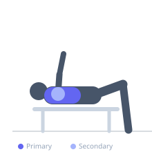

Exercise guide / Single-Arm Pec-Deck Flye
Single-Arm Pec-Deck Flye
The single-arm pec-deck flye isolates one side of the chest at a time, allowing you to address muscular imbalances and achieve a deep stretch through the pectorals. By removing bilateral compensation, each side must work independently through the full arc of motion.
Primary muscles
pectoralis major sternal
pectoralis major clavicular
Secondary muscles
deltoid anterior
Stabilizers
pectoralis minor
Equipment
Pec Deck / Fly Machine


Starting position
- Sit on the pec-deck machine and grasp one handle with a single hand. Adjust the seat so your elbow is at shoulder height and your upper arm is parallel to the floor.
Setup
- Set the machine to a weight you can control with one arm. Position the seat height so the shoulder joint is in line with the machine's pivot point.
Steps
- Step 1: Sit tall with your back firmly against the pad and feet flat on the floor.
- Step 2: Grasp the single handle with one hand, arm slightly bent at the elbow.
- Step 3: Drive the handle forward and across your body in a sweeping arc, squeezing the chest at peak contraction.
- Step 4: Slowly return the handle to the starting position, allowing a controlled stretch across the chest.
- Step 5: Complete all reps on one side before switching to the other.
Coaching cues
- Arc the hand like you're hugging a tree
- Keep the shoulder blade anchored to the pad
- Squeeze and hold for a beat at peak contraction
Breathing
- Exhale as you bring the handle forward through the arc. Inhale as you return to the stretched starting position.
Range of motion
- Move through the full available arc without torso rotation. Allow a comfortable stretch at the start and a firm squeeze at the end.
Tempo
- 2-1-2-0
Common mistakes
- Rotating the torso to assist the movement
- Using too much weight, reducing range of motion
- Locking the elbow fully, stressing the joint
Safety
- Keep a slight bend in the elbow throughout
- Do not force the arm behind the body's midline at the stretch
- Adjust seat height carefully to protect the shoulder joint
Training
- hypertrophy: 10–15 reps
- endurance: 15–20 reps
- hypertrophy: 3–4 sets
- Rest: {'hypertrophy': 60, 'endurance': 45}